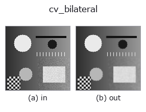

smoothing op• 数据种类:image → image
• 调用:fullseye.apply(img, "cv_bilateral", a=0.5, b=0.5)(2-D 的模型是一张图 + 两个标量旋钮 a,b∈[0,1])
• HALCON 对应:bilateral_filter(其含义与参数可参考 HALCON 手册)

*图为在 128×128 合成输入上实际运行的输出。左为输入，右为输出。点云以俯视散点显示(亮度 = z)，一维序列为折线，体数据为沿 z 的最大值投影，视频为中间帧，复数图像为幅值；无法成像的返回值直接显示数值。*
扫描旋钮 a(0.1 / 0.5 / 0.9，另一旋钮取默认):
▸ cv_bilateral: knob a sweep (docs site)
扫描旋钮 b(0.1 / 0.5 / 0.9，另一旋钮取默认):
▸ cv_bilateral: knob b sweep (docs site)
换别的图像(合成场景 / 照片 / 硬币。上排为输入，下排为对应输出。旋钮取默认):
▸ cv_bilateral: other inputs (docs site)
*未展示彩色 (H,W,3) 输入: 此算子把颜色通道当作第三个空间轴(跨通道)。请按通道分别调用。*
双边滤波器(OpenCV 实现)。这是一种同时以空间接近度与亮度值接近度为权重的高斯式平滑,能在不模糊边缘(亮度差较大的边界)的情况下,只平滑平坦区域。
> 以下的详细说明为原文 —— 摘要与标题已翻译。
HALCON の bilateral_filter(bilateral filtering of an image.)に相当。実装は `cv2.bilateralFilter(v, d=5, sigmaColor=0.05+0.4*b, sigmaSpace=1.0+3.0*a)` —— カーネル直径 d は 5 に固定、a は空間方向の広がり sigmaSpace を 1.0〜4.0 に、b は輝度方向の許容差 sigmaColor を 0.05〜0.45 に振る(引数の並びが sigmaColor, sigmaSpace の順なので a/b の対応がずれやすい点に注意)。
• gallery2d_smoothing_rank 族使用指南
• 示例数据目录(下载 URL / 许可证) —— 2-D 用 skimage.data(BSD/公有领域)加合成图,3-D 给出真实数据源(Stanford/PDS 等)的下载 URL。
• 算子来历与参考文献 —— 该算子族所依据的研究/方法出处。
• 算法的正典(作者・年份)与用途见上面的族使用指南。
下面的程序已确认可以运行(与图相同的输入)。在 Studio 帮助中，此块会变成按钮，可当场加载并运行。
cv_bilateral 0.35 0.50
▸ Load this pipeline · Load & run
• gallery2d_smoothing_rank — py -3.11 examples/gallery2d_smoothing_rank.py
image 作为输入)identity · gaussian · mean_box · bilateral · unsharp · median · min_filter · max_filter
smoothing)gaussian · mean_box · bilateral · unsharp · sk_tv · sk_wavelet · sk_rolling_ball · sk_nlm
*Provenance: ops.py — 2D 算子登记表。本条目由 tools/opdocs.py md 自动生成(请勿手工编辑)。*
© 2026 Kazufumi Furuse — Fullseye operator documentation. Licensed under Apache-2.0.
{kind=link}
{kind=link}
{kind=link}